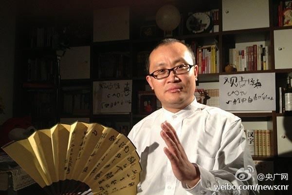

每个汉字和字母都认得，就是看不懂在说什么……//@非洲Aji開源哥_lisp:LL 不跳， Fate 不跳=，=//@朝倉十夜: 哎呀呀，还有黄金拼图和悠悠式也没跳过，果然芳文社大法好！@朝倉十夜:说到同时不跳op和ed的番，我除了神不在的星期天和黄昏少女x失忆之外，神隐之狼，点兔，这美与丑的世界，DCII，prism ark,尸姬，夏娜第一季。闲着没事说说，别人可以当做补番参考。另外我可以自豪的说，圣痕炼金士两季都没跳，飞蘭和yui的op好棒好棒的，然后ed看福利。
//@杜米线想毛线：op是片头曲，ed是片尾曲。番有点像美剧的一季。不跳意味着曲子好听或者剧情引人入胜。其他大多是动画片的圈内别称//@Ada李力: 每个汉字和字母都认得，就是看不懂在说什么……//@非洲Aji開源哥_lisp:LL 不跳， Fate 不跳=，=//@朝倉十夜: 哎呀呀，还有黄金拼图和悠悠式也没跳@朝倉十夜:说到同时不跳op和ed的番，我除了神不在的星期天和黄昏少女x失忆之外，神隐之狼，点兔，这美与丑的世界，DCII，prism ark,尸姬，夏娜第一季。闲着没事说说，别人可以当做补番参考。另外我可以自豪的说，圣痕炼金士两季都没跳，飞蘭和yui的op好棒好棒的，然后ed看福利。
明俊说他以前就看到过这个广告，没用是因为觉得这个难看，土里叭唧的。他还曾想网上买个满意的指示，或者自己打印一个。－ 他是这么挑剔以及行动迟缓，结果车里常年放的是一张手写电话号码的小破纸。我是只要有改进就采用，没有一步到位的想法。@Ada李力:车头放了张广告，刚看到时很怒，准备扔时发现是个移车电话贴纸，正是我需要的。于是贴了用上，扔了之前手写的移车电话。看了下背面，原来是雕爷搞的美甲师和车内净化器APP的推广。
岂止是媒体人的寒冬……//@梁树新:媒体人的寒冬。@央广网:【家属证实知名媒体人曹保印因涉嫌寻衅滋事被刑拘】9月24日，律师周泽发布微博称，他从前《新京报》首席评论员曹保印的妻子上官女士处得知，曹已于23日在南京被警方带走。随后经上官女士证实，曹保印已被北京警方以“涉嫌衅滋事罪”刑拘。家属证实知名媒体人曹保印因涉嫌寻衅滋事被刑拘 
#姣姣#之前要我陪他睡觉，通常都是要求她睡着了我再走。今天陪她复习完，她很主动地说：“妈妈，你可以回去了”。我说：“等你睡着我再走”，姣姣犹豫一下，翻出手机开始刷。- 我说今天怎么不一样呢，她玩手机通常我不反对，因为我也玩。
孩子会越来越自立，有希望在。而得病的老人，只能看着情况继续坏下去，让人难过。确实不平等，所以对老人需要更多的耐心与包容。@肿瘤专家陈小兵:生命的两端是不平等的，1岁孩子把牛奶打翻往往被原谅，而80岁老人任性把水倒了，大家就或有责备。1岁的孩子不愁没人喂养，80岁的老人却担心没人赡养！阿尔茨海默病的残忍就在这里，孩子怎样成长，老人就怎样退化。他们没有“痴呆”，只是回归孩子的状态。为爱转发！今天是阿尓茨海默病日（老年痴呆症）